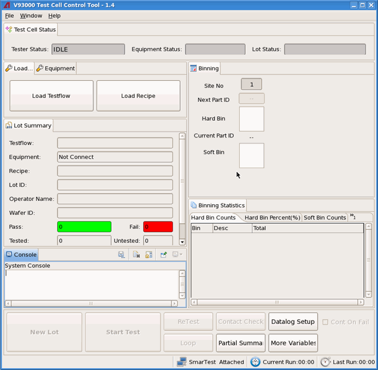

Test Cell Control Tool
Test Cell Control Tool(TCCT) is designed for production engineering. It allows debugging the testflow during the production testing. It can help on the product ramp-up in design validation, product qualification and manufacturing validation. It supports HAND test, PROBER test and HANDLER test.
It cooperates with SmarTest to execute the testflow and display the test results, the binning information, the yield of the tested devices. It provides the functionality to control the data log settings and generate the data log files and the lot summary file for the tested devices. The generated data log files from TCCT can be analyzed with the Test Cell Control Tool.
TCCT is released independently from SmarTest. You need to get the installation package and install it separately.
TCCT provides the operation interface to process the lot test. You can load the testflow, set the equipment, control the data log settings, execute the lot test and monitor the yield from the GUI of TCCT. (Refer to the elements of TCCT for the detailed explanation to the user interface.)

Functional changes
- Introduced in SmarTest 7.2.0
- SmarTest 7.2.2: Shows the version number in the title in TCCT 1.4.